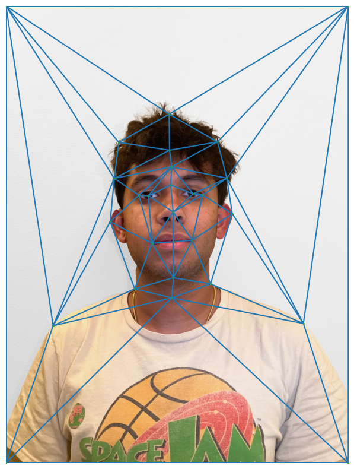
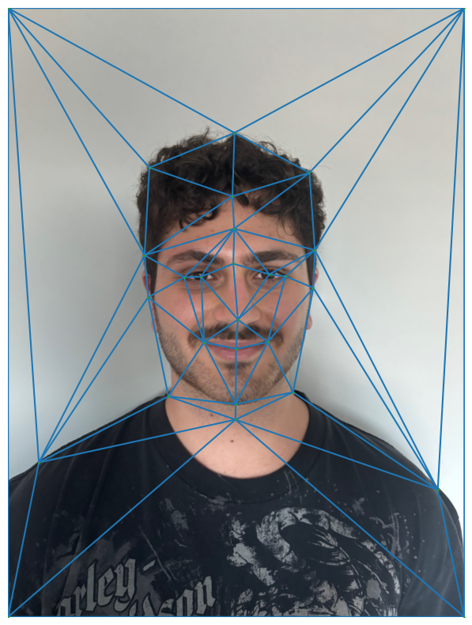
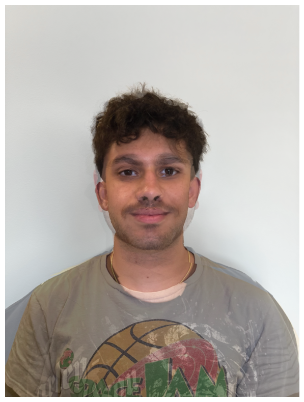
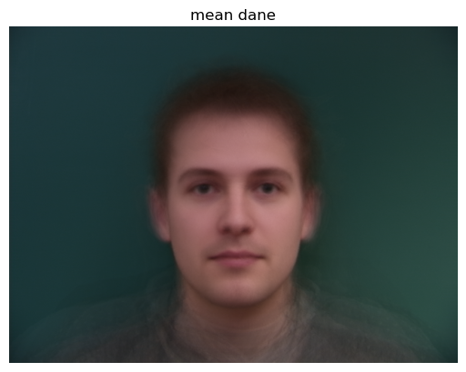
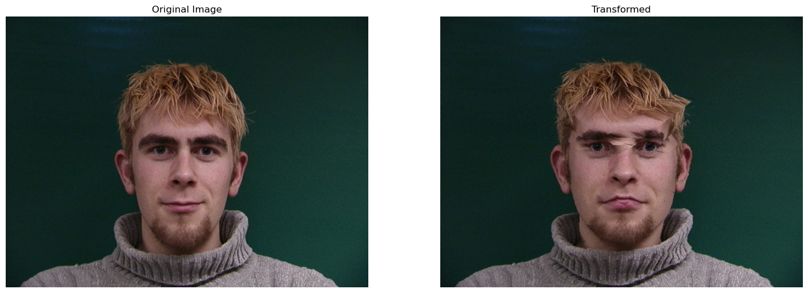
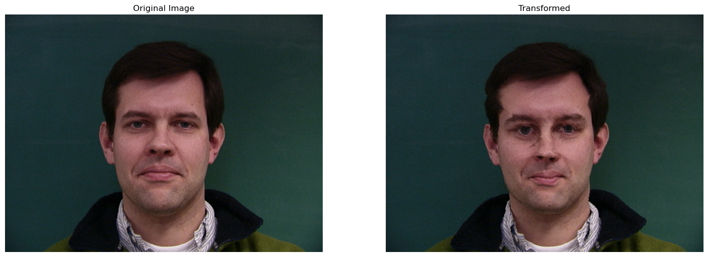
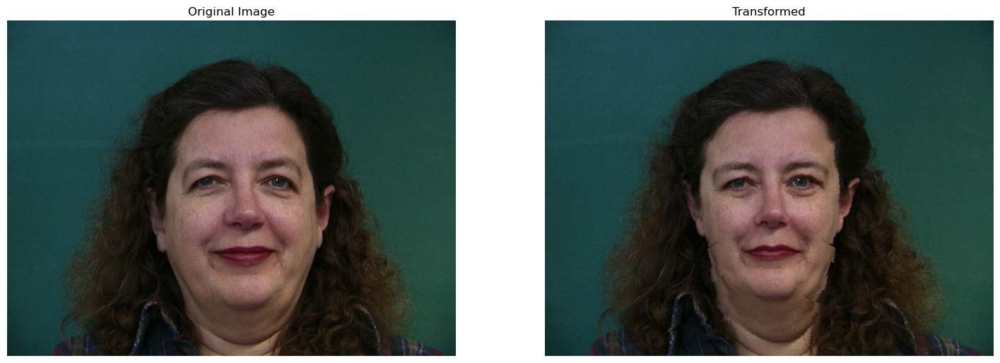
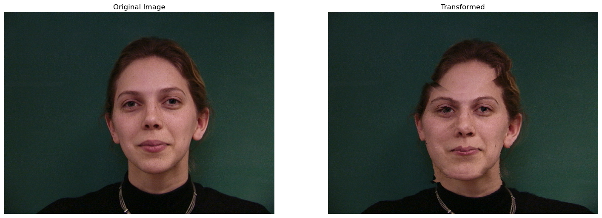
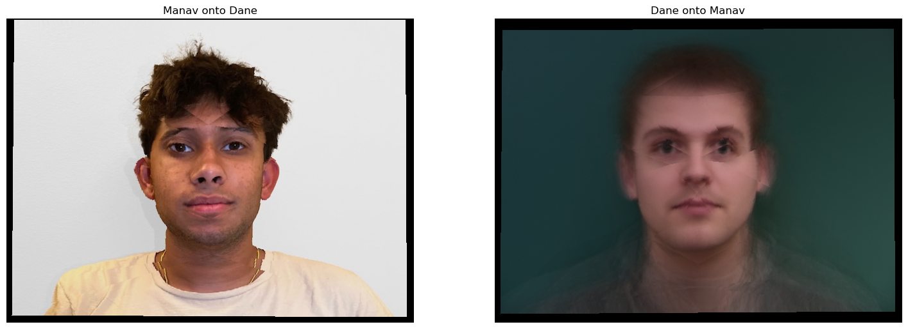
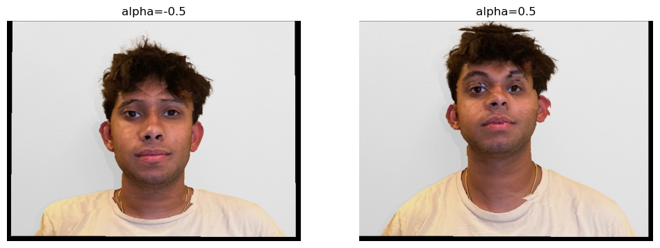

First, if we wanted to morph two images to achieve some halfway result, we must first defining corresponding points between both images. I did this first using the given labeling tool by course staff, and then computing a Delaunay triangulation using scipy between the corresponding points. A resulting triangulation from two images of my friends is overlaid onto the original images below.
 Since the pictures I took of them were originally different sizes, but the same aspect ratio, I simply shrunk the larger picture with skimage.transform.resize.
In this part, we computed an actual midway face between the two earlier images. The midway face is shown below. I computed this using the triangulation from the previous step as well as with a Nearest Neighbor approach as opposed to something like griddata for efficiency, as while the NN approach lost some smoothness around the head area, it ran orders of magnitude faster. In my approach, I defined a computeAffine function essentially computing an affine transformation between the two previously calculated Delaunay triangulations.
In this section, we show the transition from one face to another with further intermediate morphs as opposed to a singular midway face. The midway face is produced by this morph sequence at warp_factor = 0.5, and by iterating over increasing warp factors from 0 to 1, we can create a progression of intermediary morphs which was then compiled into a gif as below.

In this section I used the Danes dataset to observe traits of an "average" face amongst a population. This was essentially done by computing the mean of all faces, similar to part 2, but this time over the entire dataset and not just 2 images. The mean face of all Danes is shown below.
Subsequently, some example images from the dataset were then warped back onto the average face. 4 are shown below.
   Finally, I warped one of my friend's faces onto the average dane and vice versa.
The final part consisted of adjusting some parameter alpha of the combined points to emphasize or de-emphasize certain features, effectively creating caricatures of the original image. In the below image, I used my friend's image morphed onto the average Dane face, and with a high alpha value we see traits like a longer neck and smaller forehead, and with lower alpha we have eyes pointing downwards and more of a smile
